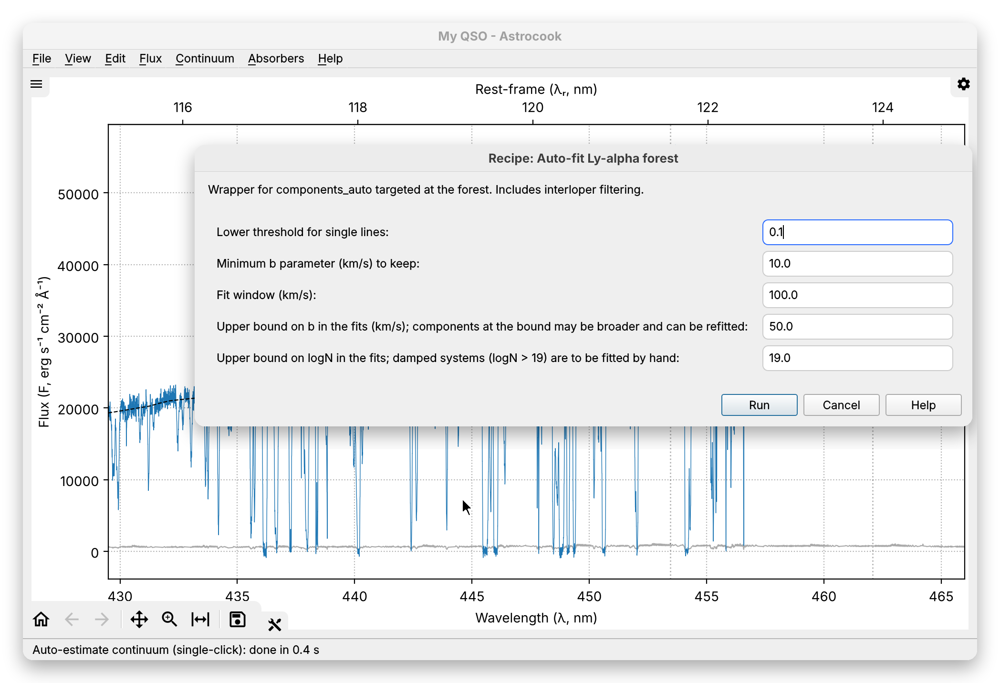
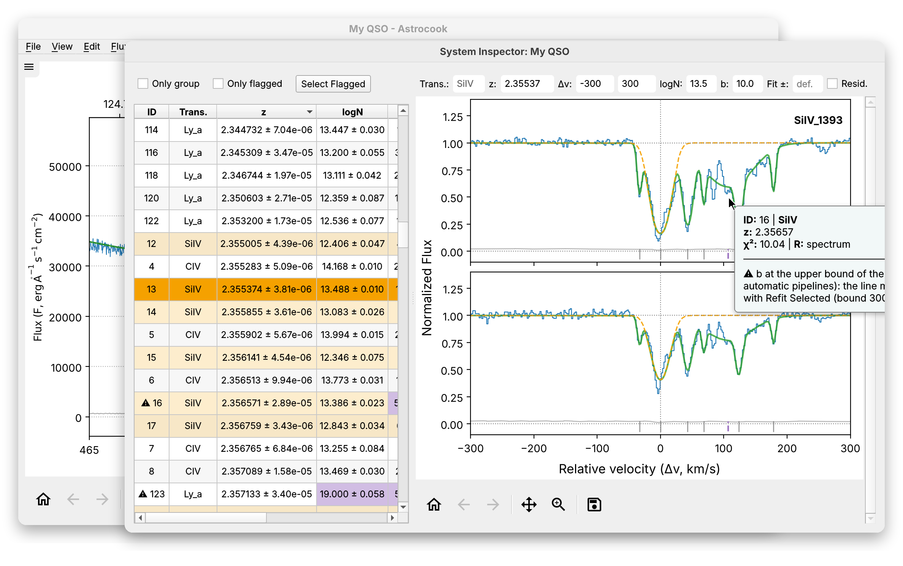
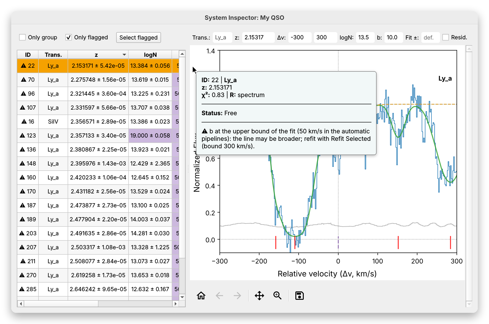
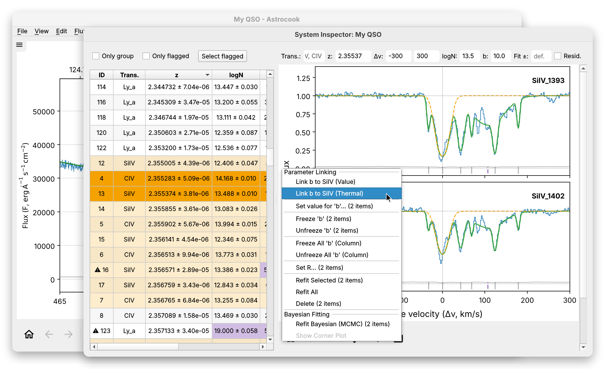

Absorption Systems#
Detecting and fitting absorption lines is the core mission of Astrocook. The software provides a tiered approach: fully automated pipelines for initial detection, and a dedicated System Inspector for detailed Voigt profile analysis and manual refinement.
1. Automated Detection Pipelines#
For most science cases, you should start with one of the automated pipelines in the Absorbers menu. These recipes scan the spectrum, identify features, and perform an initial fit.
Important
Normalization: All fitting recipes calculate absorption depth relative to the continuum. Astrocook uses the cont column (multiplied by telluric_model if present) as the reference.
If no continuum exists, the software assumes the flux
Fis already normalized (median \(\approx\) 1).To use an alternative continuum (e.g., a power-law
cont_pl), you must first copy it into the maincontcolumn using Edit > Apply Expression… (cont = cont_pl).
Note
This recipe requires Emission Redshift (\(z_{em}\)) and Resolution (\(R\)) to be defined. If missing, Astrocook will automatically prompt you to set them via the Set Properties dialog before proceeding.
Ly-alpha Forest#
If you are analyzing a high-redshift quasar (\(z > 2\)):
Ensure your Emission Redshift is set correctly.
Go to Absorbers > Auto-fit Ly-alpha Forest….
Threshold: The default score (
0.1) is usually fine.Min b: The minimum Doppler parameter (e.g.,
10km/s) helps filter out noise spikes or unphysically narrow lines (interlopers). The Ly-alpha lines narrower than this are removed after the fit and the rest is fitted again; the lines that the last fit leaves below Min b are removed too, so none is left in the result.Click Run.
This pipeline focuses on the region between the Ly\(\beta\) and Ly\(\alpha\) emission lines.
All the automatic pipelines remove the components that end at the lower bound of the column density (logN = 10): they absorb nothing measurable. The components that end at another bound of the fit are kept, with a warning (see the flags of the components).
Metal Doublets#
For finding distinct metal systems (CIV, SiIV, MgII) redward of the Ly\(\alpha\) emission:
Go to Absorbers > Auto-detect Doublets….
Multiplets: You can customize the list (e.g.,
CIV, SiIV, MgII).Click Run.
This recipe searches for pairs of lines with the correct velocity separation and optical depth ratios. Each doublet gives one candidate system, from its stronger line; candidates beyond the emission redshift by more than 3000 km/s (a margin for absorbers associated with the quasar) are not considered.
Note
This recipe requires Emission Redshift (\(z_{em}\)) and Resolution (\(R\)) to be defined. If missing, Astrocook will automatically prompt you to set them via the Set Properties dialog before proceeding.
General Detection#
For a more generic search (or if you are looking for specific ions):
Go to Absorbers > Identify Absorption Lines….
This generates a list of candidate regions but does not fit them immediately.
You can then visualize these regions by selecting
abs_idsin the Aux. Column dropdown of the Plot Controls.
Note
This recipe requires Emission Redshift (\(z_{em}\)) and Resolution (\(R\)) to be defined. If missing, Astrocook will automatically prompt you to set them via the Set Properties dialog before proceeding.

Important
Upper bound on b in the pipelines. The automated pipelines (Ly-alpha forest, doublets, general component detection, Lyman series, associated metals) fit with an upper bound on the Doppler parameter, Max b (default 50 km/s). Without it, components in crowded regions such as the forest tend to broaden into their neighbours: the fits become several times slower and produce spurious broad lines.
A component that ends exactly at the bound (e.g. b = 50 km/s) may be broader in reality. Select it in the System Inspector and use Refit Selected: manual fits use only the physical limit (300 km/s), so the line can reach its true width. Refit All also takes a Max b parameter (default 300 km/s).
Upper bound on logN in the pipelines. The same pipelines also fit with an upper bound on the column density, Max logN (default 19). In a saturated trough that the detected lines do not fill, a single component can otherwise fill it with its damping wings and grow to logN 20-23, blacking out the model for hundreds of km/s around it. With 19 the Lyman-limit systems are still within reach; damped Ly-alpha systems and sub-DLAs are to be fitted by hand, where the physical limit (23) applies: add the component in the System Inspector and use Refit Selected, or Refit All, whose Max logN defaults to 23. A component that ends at the bound (logN = 19) may be stronger in reality, or may stand for several weaker lines that the pipeline did not detect.
2. The System Inspector#
Once you have systems (either from a pipeline or added manually), the System Inspector is your cockpit for detailed analysis.
To open it: View > View System Inspector, or right-click over a component in the main window to display the context menu.
Left Panel: System List#
This table lists every component in the model.
Edit: Double-click any cell (
z,logN,b) to modify its value directly.Sort: Click any column header to sort the list (e.g., by Redshift or Series).
Tooltips: Hover over a row to see detailed fit statistics (\(\chi^2\)) and constraints status.
Resolution: Right-click a component to set a specific Resolution (\(R\)) for that line, overriding the global session default.
Only group: Check the box above the table to show only the group of the selected components: the components linked to them, blended with them or close in velocity, which are fitted together with them. Right-clicking a component in the main plot and choosing Inspect … (its group) (e.g. Inspect CIV (its group)) opens the inspector this way.
Understanding Resolution Priority#
Astrocook handles instrumental resolution (\(R\)) flexibly to support both constant-resolution survey spectra and variable-resolution echelle data. The resolution of a spectrum lives in its resol column (visible in the Data Inspector): resolving power \(R\) if dimensionless, FWHM if in km/s. The Voigt fitting engine and the velocity plots use it according to this hierarchy:
Component-Specific Resolution (Highest Priority): If you manually assign a resolution to a specific component (via the right-click menu in the System List), Astrocook will always use this value for that specific line, ignoring the column.
The
resolColumn: Otherwise each pixel takes its own resolution. The fit computes the model on a grid finer than the pixels (uniform in velocity, with a step set by the instrumental width and by the narrowest line), convolves it for each pixel with a Gaussian of the resolution of that pixel, and averages it over the pixel. This models exactly spectra where \(R\) changes with wavelength, and lines narrower than a pixel.Setting the resolution: Edit > Set Properties… writes a flat
resolcolumn across the entire spectrum. It asks before replacing a column that varies with wavelength.
Without any resolution the model is only averaged over each pixel.
Note
The fit does not write the resolution it used into the components: changing the resolution of the spectrum applies to all components without their own value. Sessions saved by earlier versions, where every fit recorded its resolution in the components, are cleaned when opened.
Right Panel: Velocity Plot#
A zoomed-in view of the selected system in velocity space.
Navigation: The plot centers on the selected component. You can manually edit the Redshift (z) and Velocity Range (\(\pm v\)) using the text boxes above the plot.
Scroll: If a system has many transitions (e.g., Lyman series), use the scrollbar on the right to page through them.
Displayed Lines: The text box at the top shows which transitions are plotted (e.g.,
CIV, SiIV). You can type new ions here (comma-separated) to inspect other species at the same redshift.Test Component: The
logNandbboxes above the plot control the shape of the “ghost” profile attached to your mouse cursor, useful for visually estimating parameters before adding a component.Residuals: Check the Resid. box to show a residual plot below each transition panel.

Components with warnings of the fit#
Each fit leaves a warning on the components whose result is not reliable:
A parameter at a bound of the fit: z at the edge of the fit window, logN or b at their lower or upper bound. The automatic pipelines fit with tighter upper bounds (Max b = 50 km/s, Max logN = 19) than the manual fits (300 km/s, 23), so a component at one of those bounds may be broader or stronger in reality. The cell of the parameter is highlighted.
No uncertainties: the fit could not compute the errors of the component (the value is not constrained). Its ID is highlighted in red.
A ⚠ before the ID marks every component with a warning, and its tooltip (on the cell, or on its tick in the velocity plot, drawn dashed) says what happened and what to do. Check Only flagged to list only these components, and click Select flagged to select them all, e.g. to refit them with Refit Selected (table menu), which uses the wide bounds of the manual fits. Editing a parameter of a component clears its warnings; a new fit sets them again.

3. Interactive Fitting & Editing#
The System Inspector allows you to modify the model dynamically.
Note
Just like in the main window, if the Zoom or Pan tools are active in the plot toolbar, you must hold Ctrl (or Cmd) while right-clicking to access the context menu.
Adding Components#
If the auto-finder missed a line:
In the Velocity Plot (right panel), Right-click on the background where the line should be.
The menu offers smart options based on the transition you clicked:
Add [Ion] (Single Line): Adds only the specific line under the cursor.
Add [Ion] (Standard): Adds the full standard multiplet (e.g., both members of the CIV doublet).
Add [List] (Subset): Adds exactly the set of transitions currently visible in the Inspector.
A new component is added and fitted immediately.
Note
This recipe requires Resolution (\(R\)) to be defined. If missing, Astrocook will automatically prompt you to set them via the Set Properties dialog before proceeding.
Tip
If you see multiple transitions in the menu (e.g., Add CIV-SiIV), this will add linked components for both ions at that redshift.
Constraints (Fix/Free)#
To fix a parameter during fitting:
Select the component(s) in the table.
Right-click to open the context menu.
Select Freeze ‘b’ (or
z,logN).The value will turn italic and the uncertainty display (\(\pm\)) will disappear, indicating it is fixed.
Parameter Linking#
Astrocook supports physical linking of parameters, which is essential for fitting doublets or multiphase systems.
Select two components in the table (hold
CtrlorCmd).Right-click on the parameter you want to link (e.g., the
zcolumn).Select Link z to [Other Component] (Value).
The value will turn bold, indicating it is dynamically calculated from the other component.
Doppler Parameter Linking: When linking the Doppler parameter b, you have two physical options:
Link (Value): Assumes the broadening is dominated by turbulence (or the ions have similar mass). The
bvalues are forced to be identical.Link (Thermal): Assumes the broadening is thermal. The
bvalue is scaled according to the atomic mass ratio of the two ions (\(b \propto m^{-1/2}\)).
Note
Astrocook also tracks a turbulent broadening parameter btur separately. It is available in the table but frozen (italic) by default. You can unfreeze it via the right-click menu if you need to model mixed thermal/turbulent broadening explicitly.
Uncertainties#
The uncertainties of the fitted parameters are the square roots of the diagonal of the covariance matrix, scaled by \(\sqrt{\chi^2_\nu}\) of the fit (as in Astrocook v1): they stay correct when the error spectrum is off by a constant factor. The reduced \(\chi^2_\nu\) is stored with each component and computed only on the pixels that constrain the fitted parameters; after the automatic pipelines it refers to the final model. A large \(\chi^2_\nu\) (and large uncertainties) means that the model does not describe the data well, e.g. an unresolved blend: such components are worth inspecting and refitting by hand. If the uncertainties cannot be computed (an ill-conditioned fit), they are shown as NaN and the log names the components.
A linked parameter is computed from its target, so its uncertainty is propagated from the target through the expression of the link: a z linked by value has the same uncertainty as the z of its target, a b linked thermally the uncertainty of the target’s b scaled by the same mass ratio. The two uncertainties are therefore fully correlated, which matters when a list of components is used for statistics (count them once). A frozen parameter has uncertainty 0, as does a parameter linked to a frozen one.
Importing a Line List#
Edit > Import Systems from ASCII… reads absorption components from a table with a header, in CSV or whitespace-separated format: columns series and z (required) and optionally logN (default 13.0), b (default 10 km/s), btur, dz, dlogN, db. The _systems.csv written by File > Export ASCII can be read back this way. Components outside the spectral range are skipped; the imported components are added to the existing ones and can then be refitted with Refit All.
Refitting#
After manual edits, you often need to re-optimize the fit:
Refit Selected: Select one or more components in the table, right-click, and choose “Refit Selected”. This will optimize all highlighted lines (and their physical neighbors) in a batch process.
Refit All: Go to Absorbers > Refit All Systems… (in the main window) to re-optimize the entire spectrum, handling blends automatically.
Fit window. In every fit the redshift of a component can move only within a window around its starting value: by default ±20 km/s when a component is added, ±100 km/s in Refit Selected and Refit All. A starting value farther from the true one cannot reach it. The Fit ± field of the System Inspector, after logN and b above the velocity plot, sets the window (in km/s) of the fits run from the inspector: adding a component in the velocity plot, Refit Selected and Refit All from the table menu. Left empty (def.), it keeps the values above. Widen it when a component was placed by eye far from its line.
Manual fits (fit after adding a component, Refit Selected, Refit All with its defaults) bound b and logN only at their physical limits (300 km/s, 23), while the automated pipelines use tighter bounds (see above). Components that end at a pipeline bound are marked with a warning, and are good candidates for a manual refit.

Bayesian Fitting (Experimental)#
Astrocook v2 introduces a prototype Bayesian fitting engine, allowing you to rigorously explore parameter space using MCMC (emcee). This is particularly useful for analyzing highly blended systems or determining robust parameter uncertainties.
To run a Bayesian fit:
Select the component(s) you wish to fit in the System List.
Right-click to open the context menu and locate the Bayesian Fitting section.
Select Refit Bayesian (MCMC).
The sampling will run as a batch process, with progress tracked in the main window’s progress bar. The first steps of the chain (up to 200, and at most half of the chain) are discarded as burn-in; use enough steps (the default is 500) for the chain to converge.
Visualizing Posteriors (Corner Plots) Once a Bayesian fit completes, Astrocook stores the posterior samples in the session metadata. You can visualize these directly:
Right-click a Bayesian-fitted component and select Show Corner Plot.
This opens a dedicated, scrollable window displaying the 1D histograms and 2D contours for all free parameters (\(z\), \(\log N\), \(b\)).
The plot title explicitly shows the median values along with their asymmetrical \(1\sigma\) uncertainties (e.g., \(14.500^{+0.123}_{-0.154}\)).
Auto-Refresh: You can leave the Corner Plot window open on a second monitor. As you click through different Bayesian-fitted systems in the table, or run new fits, the plot will automatically update to reflect the active system.
Note
While the corner plot displays the full asymmetric uncertainties, the main System List table simplifies these into a single, symmetric \(1\sigma\) equivalent (derived from the standard deviation of the samples) to maintain compatibility with legacy data structures.
Cleaning Results#
After running automated pipelines or performing manual fits, your model might contain artifacts such as noise spikes fitted as narrow lines, or continuum undulations fitted as broad, shallow features (“ghosts”).
Astrocook provides a dedicated tool to filter these out:
Go to Absorbers > Clean Negligible Components….
Min logN: Components weaker than this threshold (default
11.5) are removed.Min/Max b: Components narrower than
min_b(default3.0km/s) are removed; those broader thanmax_b(default80.0km/s) are removed too if they are also weak (logN < 13), unless the combined check is turned off, which removes them all.Combined Check: By default (
True), broad lines are only removed if they are also very weak (logN < 13.0). This protects genuine broad features like DLA wings or OVI absorbers from being deleted.